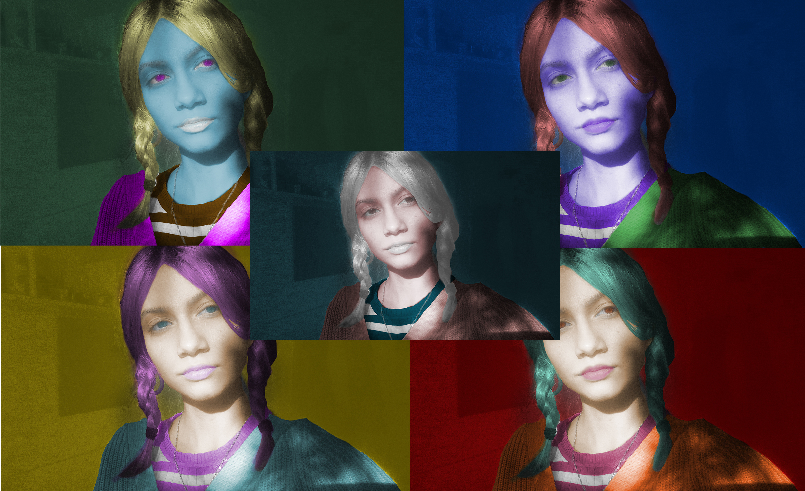

Koristeći alat za crtanje oblika, traceanjem već postojeće fotografije svijeta sam nacrtala ove dvije slike. Crtež sam dodatno uredila korištenjem transparencija, dodavanjem boja, copy-pasteanjem i zrcaljenjem.
Lubanju sam nacrtala precrtavanjem oblika iz već postojeće slike. U ovoj vježbi bilo je važno postići što veće gradacije i sjene, a to sam napravila alatom za gradaciju, transparencijama i dodavanjem mreže.
Za usavršavanje gradiva vektorske grafike, trebali smo u illustratoru nacrtati sliku voća u čašama po uzoru na već postojeću fotografiju. voće i čaše sam nacrtala alatom za crtanje oblika, dodala sam transparencije i gradacije kako bi dobili realističniji izgled. Na čašama sam koristila mrežu za gradijent, alat za zrcaljenje i copy-paste. Na kraju sam dodala pozadinu i u svoj font koristila bezierovu krivulju.
PIKSEL GRAFIKA
Peta vježba (Photoshop)
U ovoj sam vježbi naučila kako koristiti tehnike za retuširanje. Stamp-toolom i brush-toolom sam maknula nepravilnosti na licu gospođe te kloniranjem joj popravila frizuru.
Šesta vježba (Photoshop)

U ovoj vježbi smo naučili kolorirati crno-bijelu fotografiju. Selektiranjem i korištenjem maski sam podijelila sliku na različite boje te ih finalno kolorirala.
Sedma vježba (Photoshop)
Ovu sam fotomontažu napravila izrezivanjem elemenata i ljepljenjem tih elemenata u baznu pozadinu te pokušala što bolje korigirati brightness, color i saturation kako bi fotomontaža izgledala što realističnije. Najvažnija komponenta ovog zadatka bila je dodavanje sjena drop-shadowon i korištenjem blur effecta kako bi izgledalo što realističnije.
Projektni zadatak 2
Gradivo piksel grafikezavršili smo ovim projektnim zadatkom. Nebo sam izrezala iz druge fotografije i zalijepila ga na baznu fotografiju. Morali smo koristiti i tri vlastite fotografije. Kolorirala sam 3 zgrade u potpuno drugačije boje, izrezala drvo pomoću channels i burning i dodging tool-ova. Scena na ovoj fotomontaži prikazuje moje "ubojstvo" gdje gospodin trči od policije, a ja ležim na cesti s mačkom.
VIDEO/WEB
Osma vježba (Premiere Pro)
U premieru smo trebali napraviti cinemagraf, gif. Odabrala sam ulazni i izlazni slični dio videa kako bi se ta dva dijela mogla loopat u formatu gifa. Exportala sam statičnu sliku iz videa te izrezala dio gdje jedna prskalica pršće. Tu sam fotografiju dodala u video na premieru, exportala sve u gif format te komprimirala u photoshopu.
Deveta vježba (Premiere Pro)
Uredila sam stock footage u Premieru koristeći prijelazne i kolor efekte. Neki od efekta su fade.in i fade-out, rotacija i slide. Kad sam ih sve spojila i maknula im izvorni zvuk, dodala sam ne-copyrighted zvuk i na njemu isto primijenila fade.in i fade-out efekt. Video sam exportala u mp.4 formatu.

.jpg)

.gif)
{kind=link}